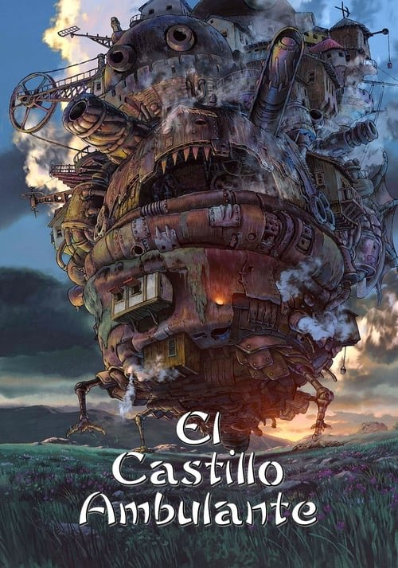

El castillo ambulante (2004)

Plataforma: Disney+
Puntuación IMDb: 8.2/10
Duración: 1h 59m
Género:
Sinopsis Rápida
Sophie, una joven sombrerera, ve su vida transformada al ser víctima de una maldición que la convierte en una anciana. Su única esperanza reside en un misterioso castillo ambulante y su enigmático dueño.
Sinopsis Detallada
En un mundo mágico donde los castillos caminan, Sophie, una joven sombrerera maldecida por una bruja, se ve transformada en una anciana. En su búsqueda por romper el hechizo, se encuentra con Howl, un poderoso mago que vive en un castillo ambulante. Juntos, emprenden una aventura llena de magia, peligro y amistad, explorando temas como la autoaceptación, la guerra y la identidad. La película destaca por su estilo visual único y su narrativa llena de encanto.
¿Por qué tenés que verla?
- Una historia mágica y conmovedora que te transportará a un mundo fascinante.
- El estilo visual inigualable de Hayao Miyazaki y la banda sonora memorable hacen de esta una experiencia cinematográfica inolvidable.
- Su influencia en la animación y la cultura popular es innegable, inspirando a generaciones de artistas y cineastas.
- Personajes complejos y memorables que evolucionan a lo largo de la narrativa.
Idea Extra
Análisis del simbolismo y las referencias culturales en 'El castillo ambulante'.
{{CONTENIDO_RELACIONADO}}